Manuale software Waterjet
Una pubblicazione di Donatoni Macchine S.r.l.
Versione Software: 0.0
Versione Manuale: 0.0
Data:
Generalità
Le informazioni contenute in questo documento sono applicabili solamente alle versioni software riportate nel frontespizio.
È possibile che non tutte le funzioni esplicabili dal prodotto siano descritte nella presente documentazione; in questi casi Donatoni Macchine S.r.l. non è comunque obbligata a garantire queste funzioni né a preservarle nelle future versioni.
Scopo del manuale
Questo manuale riporta le istruzioni d’utilizzo necessarie per la buona conoscenza del software Waterjet e dell’interfaccia Parametrix e informazioni utili per trovare soluzioni a malfunzionamenti.
Dall'osservanza di quanto descritto in questo manuale dipende il regolare funzionamento, la durata e l'economia di esercizio della macchina stessa.
Il manuale d’uso e manutenzione della macchina e il presente manuale software devono essere sempre reperibili nel luogo d’installazione dell’impianto, in posto sicuro e facilmente accessibile. Se uno di essi viene smarrito contattare il responsabile del servizio prevenzione e protezione.
La mancata osservanza di quanto descritto in questo manuale, la negligenza, un cattivo e inadeguato uso della macchina, possono essere causa di annullamento, da parte della Ditta Costruttrice, della garanzia che essa dà alla macchina stessa, ed inoltre si possono non ottenere i vantaggi per cui questa macchina è stata costruita.
La DONATONI MACCHINE SRL, è comunque a disposizione per assicurare una pronta ed accurata assistenza tecnica e tutto quanto può essere utile per il miglior funzionamento ed ottenere il massimo della resa dalla macchina.
La Ditta Costruttrice, si riserva il diritto di modificare, a propria discrezione, la presente pubblicazione ed i dati in essa contenuti qualora lo ritenesse necessario per un miglioramento tecnico o commerciale del prodotto.
Conservazione del manuale
Il presente Manuale Software deve essere custodito per tutta la vita operativa della macchina, anche in caso di cessione a terzi.
Al fine di conservare correttamente il Manuale Software si raccomanda:
Impiegare il Manuale in modo tale da non danneggiare tutto, od in parte, il contenuto; in particolare si raccomanda di non abbandonare il Manuale durante l'utilizzo e di riporlo nel luogo assegnato immediatamente dopo il termine della consultazione;
Non asportare, strappare o riscrivere per alcun motivo le parti del Manuale;
Conservare il Manuale in zone protette da umidità, calore ed altri agenti ambientali che potrebbero pregiudicarne l'integrità o la durata;
In caso di smarrimento o danneggiamento di tutto o parte del contenuto del presente Manuale, richiedere copia di tale documentazione al Costruttore.
Utenti
Questo documento contiene informazioni rivolte a:
Operatore macchina
Tecnico autorizzato ad effettuare assistenza
Uso del documento
Il documento è suddiviso in capitoli che descrivono:
Conoscenza della struttura software e dell’interfaccia Parametrix
Funzioni della macchina in modalità Manuale ed Esecuzione
Funzioni di acquisizione immagini
Configurazione e utilizzo della funzione Hydrofinish
Descrizione delle principali sezioni del software
Notifica dei problemi
Per gli eventuali problemi che si dovessero presentare durante lo studio di questo documento, contattare il servizio assistenza Donatoni Macchine S.r.l.
All’apertura, l’applicativo D-WATERJET si presenta con la seguente interfaccia:
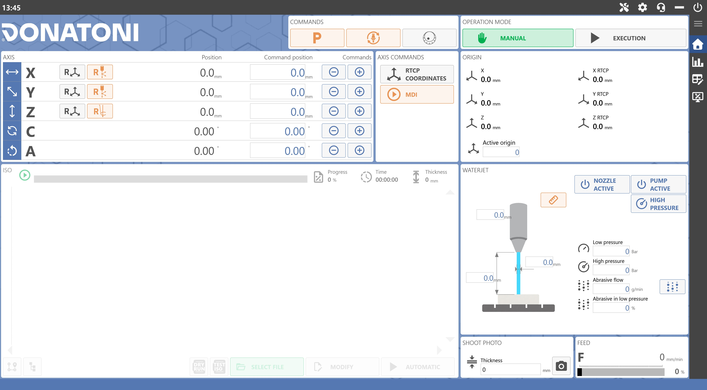
Barra superiore
Questa barra è collocata nella parte superiore di ogni pagina dell’applicativo.

 | Manutenzioni |
 | Impostazioni |
 | Assistenza |
Minimizza | |
Spegni / Riavvia |
Manutenzioni
Questa pagina mette a disposizione una lista di manutenzioni.
Ogni riga si riempie progressivamente per rappresentare lo stato di avanzamento temporale fino alla prossima manutenzione.
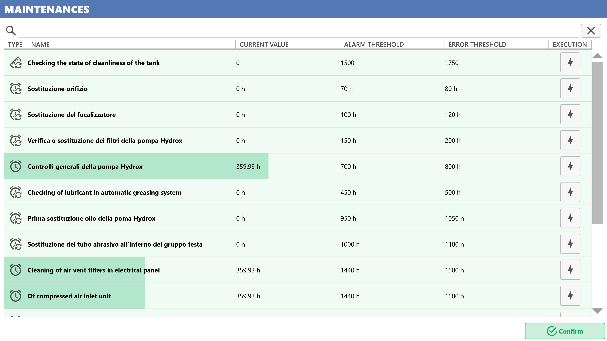
Filtro per nome | |
 | Esecuzione |
Esecuzione di una manutenzione
In questa finestra sono contenute informazioni e collegamenti utili per la specifica manutenzione selezionata:
Nome manutenzione
Descrizione manutenzione
Informazioni sull’intervento di manutenzione
Collegamenti al DSC (Donatoni Share Content)
La pagina DSC direttamente aperta sul lato destro della finestra.
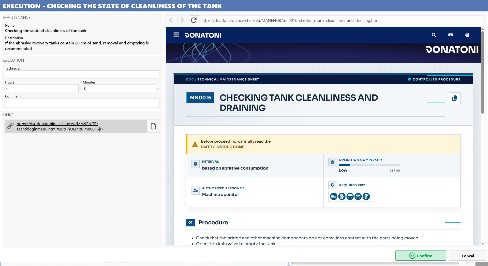
Impostazioni
La pagina di impostazioni si presenta come di seguito:
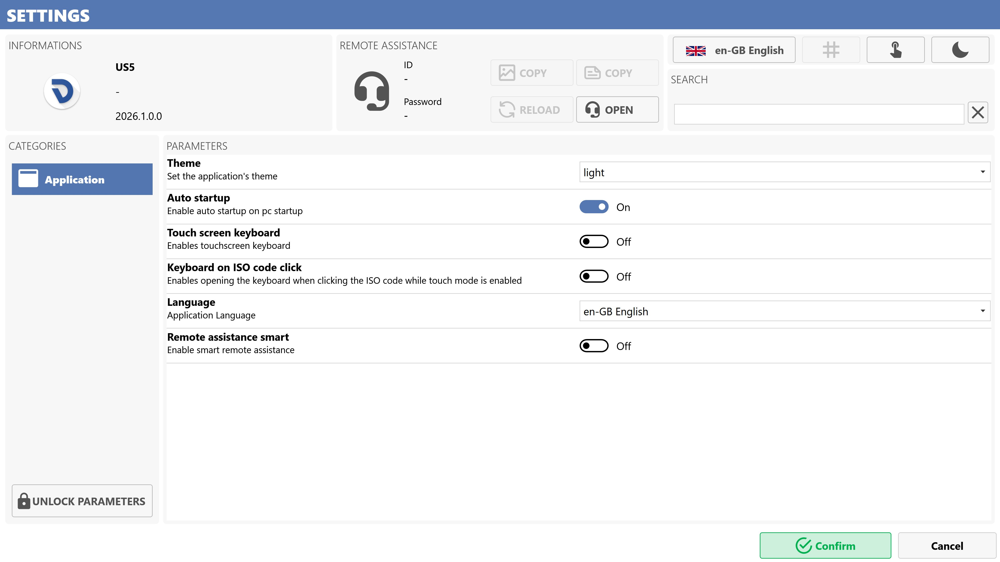
Informazioni
Nella parte superiore a sinistra del pannello sono riportate informazioni generiche riguardo l’applicativo installato e la versione corrente.

Assistenza remota
Questo riquadro collocato nella parte superiore centrale del pannello permette all’operatore di contattare l’assistenza e fornisce le seguenti azioni:

Barra superiore impostazioni
Questa barra è posizionata nella parte superiore destra del pannello.
 | Lingua impostata |
Gestione interfaccia | |
 | Tastiere touch screen |
 | Tema applicativo |
Cerca
Questa barra è collocata appena sotto la barra superiore, sempre sul lato destro del pannello.
La barra si presenta come di seguito:

Questo campo di testo, opportunamente riempito, permette di limitare i risultati mostrati nel riquadro parametri, mostrando solamente quelli che contengono il testo inserito, come mostrato nella seguente immagine di esempio:
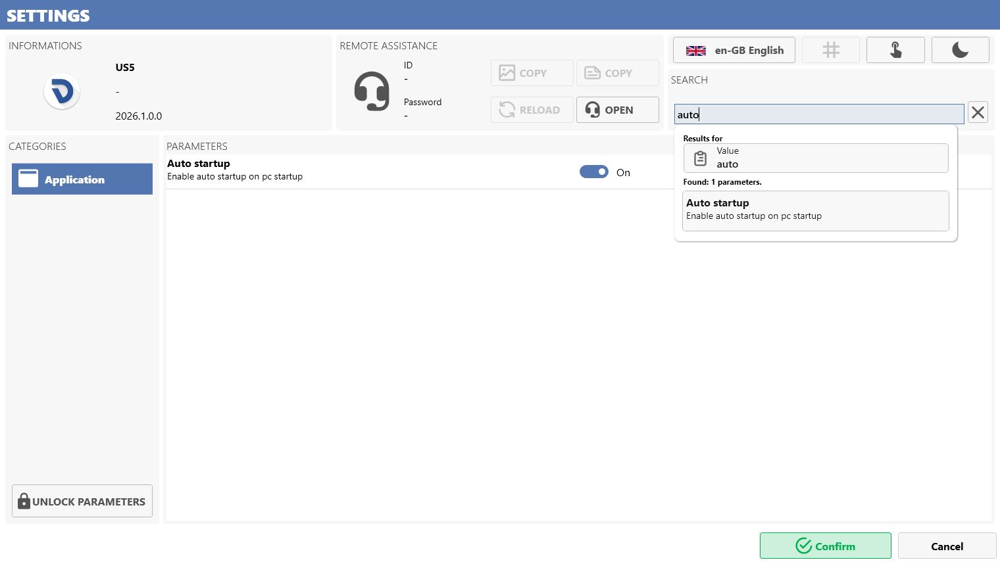
Categorie
Questo riquadro collocato sul lato sinistro dell’interfaccia permette di selezionare una macro categoria di impostazioni e di accedere alle categorie avanzate.
L’accesso alle categorie avanzate è accessibile soltanto previo inserimento di una password da parte di tecnici Donatoni autorizzati.

Parametri
Questa sezione che occupa la parte centrale del pannello parametri, permette all’operatore di modificare i parametri della categoria attualmente selezionata.
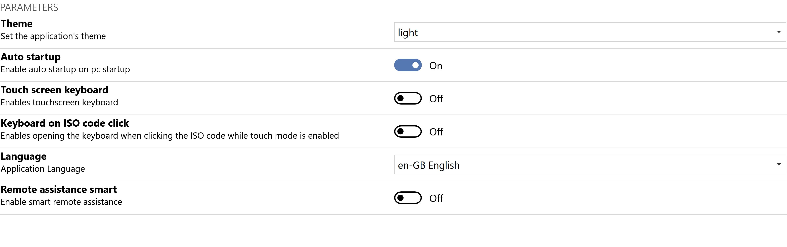
Categoria Applicazione
Tema | Imposta il tema dell’applicativo. |
Avvio automatico | Abilita l’avvio automatico all’avvio del pc. |
Tastiera su schermo | Abilita la tastiera su schermo. |
Tastiera al click del codice ISO | Abilita l’apertura della tastiera al click del codice ISO quando la modalità ‘touch’ è attiva. |
Lingua | Lingua dell’applicativo. |
Assistenza remota smart | Abilita l’assistenza remota smart. |
Barra inferiore impostazioni
Questa barra è collocata nella parte inferiore destra della pagina.
 | Conferma |
Cancella | Chiude il pannello delle impostazioni annullando eventuali modifiche apportate dall’operatore. |
Assistenza
La pressione del pulsante assistenza genera un pannello di teleassistenza simile a quello riportato nella seguente immagine:
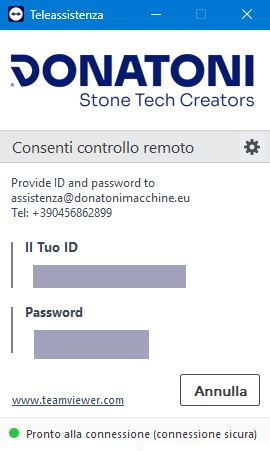
Per poter ricevere teleassistenza direttamente sulla macchina, l’operatore è tenuto a conferire all’assistenza le seguenti informazioni riportate nel pannello:
ID | Nell’immagine di esempio il numero appena sotto la voce: Il Tuo ID. |
Password | Nell’immagine di esempio l’insieme di caratteri e numeri collocati appena sotto la voce: Password. |
Spegni / Riavvia
Da questo pannello è possibile eseguire le seguenti operazioni:

Chiudi applicazione | |
Riavvia applicazione | |
Arresta sistema | |
Riavvia pc |
Barra laterale
Questa barra laterale è collocata nella parte destra di tutte le pagine dell’applicativo.
 | Visibilità barra laterale |
 | Home |
 | Statistiche |
Servizi | |
CadCam |
L’interfaccia Home si mostra come di seguito:

Comandi
Questo riquadro è collocato nella parte superiore centrale dell’interfaccia.
Permette all’operatore di eseguire le seguenti azioni:

 | Parcheggio automatico |
 | Cambia Utensile Manuale |
 | Volantino |
Modalità operativa
Il seguente riquadro è posizionato nella parte superiore destra dell’interfaccia e permette all’operatore la seguente scelta:

 | Manuale |
Esecuzione |
Assi
Questo riquadro è collocato nella parte superiore sinistra dell’interfaccia.
Il riquadro può assumere una forma e disposizione dei contenuti diversa in base alla modalità operativa selezionata:
Manuale
Con modalità operativa Manuale il riquadro appare come illustrato nella seguente immagine di esempio:

Pulsanti Assi
Limitatamente a questa modalità operativa sono disponibili i seguenti pulsanti:
 | Reset Asse |
 | Reset origini X e Y |
 | Reset origine Z |
Diminuisci quota asse | |
Aumenta quota asse |
Esecuzione
Con modalità operativa Esecuzione il riquadro appare come illustrato nella seguente immagine di esempio:
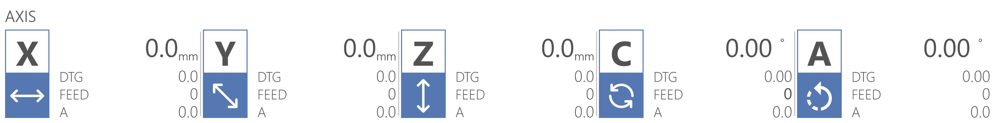
Comandi Assi
Questo riquadro è collocato appena a destra del riquadro Assi, e permette le seguenti operazioni:
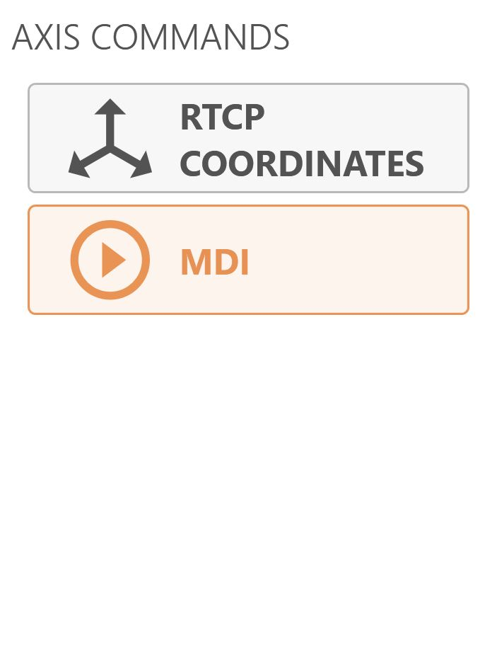
 | Coordinate RTCP Procedura di funzionamento:
La movimentazione tramite comando RTCP è consentita solamente quando la chiave codificata è inserita nella postazione adeguata, individuabile sulla console operatore.
|
 | MDI / MDI RTCP |
Origine
Questo riquadro è collocato nella parte superiore destra dell’interfaccia, appena sotto il riquadro Modalità Operativa.
Permette all’operatore di visualizzare le origini degli assi, le origini RTXP, visualizzare e modificare l’origine attiva.

Iso
Questo riquadro si estende nella parte inferiore sinistra dell’interfaccia e permette all’operatore di gestire i file ISO.
Quando un ISO è caricato, l’interfaccia assume il seguente aspetto:

Barra superiore
Nella barra superiore del riquadro sono raccolte le seguenti informazioni:
Avvia | |
Progresso | |
Tempo stimato | |
Spessore |
Barra inferiore
In questa barra posizionata nel lato inferiore del riquadro sono messi a disposizione dell’operatore i seguenti pulsanti:
 | Anteprima |
Parti | |
 | Dry run |
 | Test Iso |
Seleziona file | |
Modifica | |
Automatico | |
Ricerca blocco |
Waterjet
Questo riquadro è collocato nella parte centrale destra dell’applicativo e offre all’operatore le seguenti possibilità:

Pulsanti Waterjet
Misura utensile | |
Getto attivo | |
Pompa attiva | |
Alta pressione | |
Abrasivo attivo |
Parametri Waterjet
Bassa pressione | |
Alta pressione | |
Flusso abrasivo | |
Abrasivo in LP |
Scatto foto
Questo riquadro è collocato nella parte inferiore dell’interfaccia.
Generalmente, questa funzionalità permette scattare una foto del banco di lavoro della macchina utilizzando il dispositivo fotografico incorporato.

 | Spessore |
 | Scatta foto |
Pannello scatto foto
Premendo questa icona, si scatta una foto e si apre la pagina dell’immagine acquisita.
Da questa pagina è possibile scartare o salvare la foto, specificando il percorso di salvataggio e lo spessore desiderato.
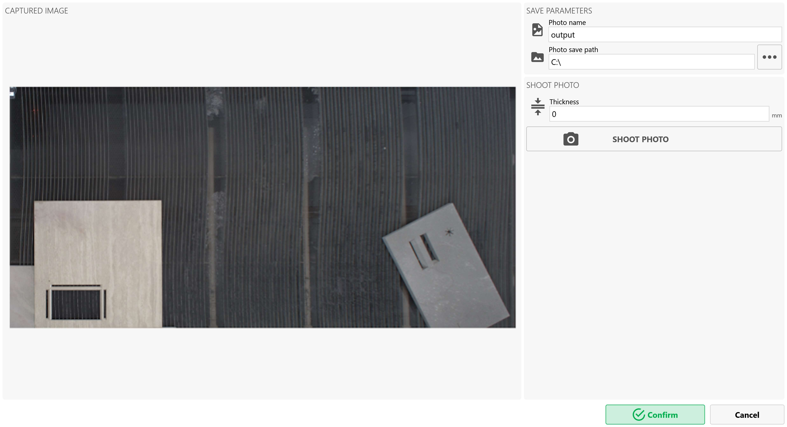
Parametri di salvataggio
Nome foto | |
 | Percorso salvataggio foto |
 | Seleziona percorso foto |
Scatta foto
| Spessore |
| Scatta foto |
Feed
Questo riquadro è collocato nella parte inferiore destra dell’interfaccia e permette di visualizzare il valore Feed, che rappresenta lo spostamento interpolato della macchina.

Quando il tool plus è abilitato, l’interfaccia della pagina centrale cambia aspetto.
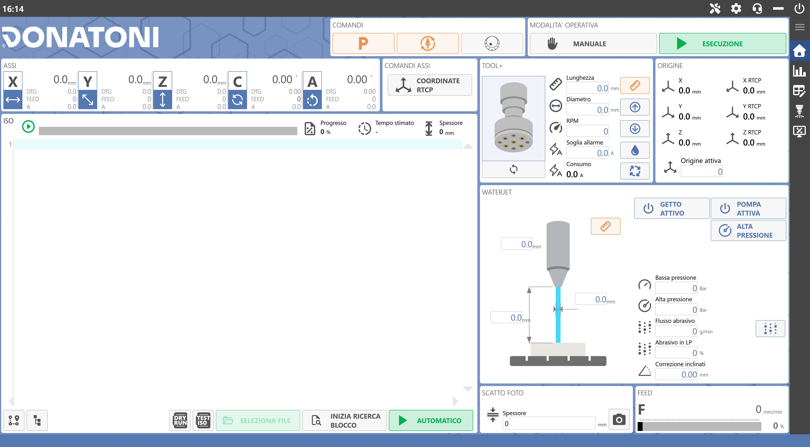
Tool plus
Questo riquadro è collocato nella parte superiore destra dell’interfaccia e permette di gestire il Tool Plus:
/3.0.png)
Parametri Tool Plus
/3.3_b-20261023-053843.png) | Lunghezza |
/3.4_b-20261023-053756.png) | Diametro |
RPM | |
/3.6_b-20261023-054008.png) | Soglia allarme |
| Consumo |
Pulsanti Tool Plus
/PART_InnerGrid_System.Windows.Controls.Grid_28831760-20261023-140317.png) | Cambia modalità |
/3.8.png) | Tasta utensile |
Sollevamento | |
/3.10.png) | Abbassamento |
/3.11.png) | Accensione/Spegnimento acqua |
/3.12.png) | Attiva/Disattiva rotazione |
Tramite questa finestra è possibile visualizzare le statistiche delle lavorazioni eseguite dalla macchina.
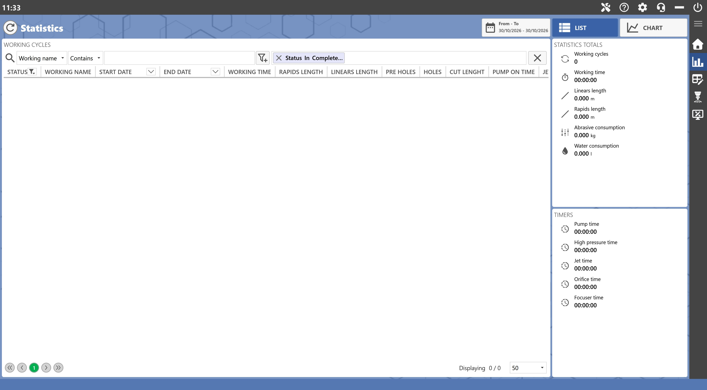
Barra superiore
Aggiorna statistiche | |
 | Filtro date |
Lista | |
Grafico |
Filtro data
Questo filtro permette di limitare nel tempo la raccolta delle statistiche.
Una volta cliccato il pulsante per filtrare le date, verrà aperto il seguente pannello che permette di modificare la data di inizio, quella di fine, oppure di impostare uno dei filtri temporali collocati sul lato sinistro del pannello:

Statistiche Lista
La visualizzazione in lista permette all’operatore di ordinare e filtrare le statistiche tramite i campi a disposizione visualizzati nella seguente immagine di esempio:

Barra inferiore statistiche lista
Selettore pagina
| |
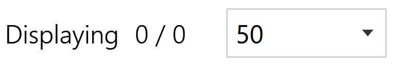 | Risultati visualizzati |
Statistiche Grafico
La visualizzazione a grafico permette all’operatore di visualizzare le statistiche disposte nel tempo e limitatamente alla categoria attualmente selezionata.
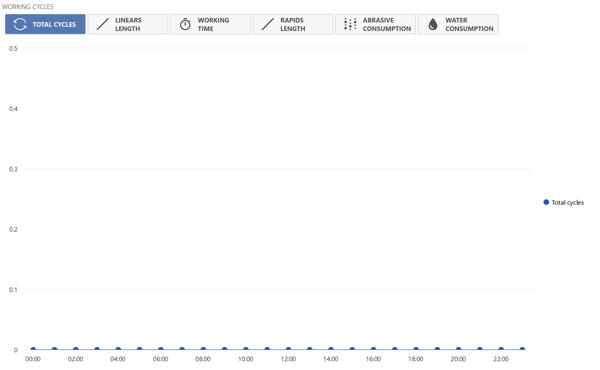
Categorie
Di seguito sono riportate le categoria standard disponibili nelle statistiche disposte a grafico:
Totale cicli | |
Lunghezza lineari | |
Tempo di lavoro | |
Lunghezza rapidi | |
Abrasivo consumato | |
Acqua consumata |
Totali statistiche
Questo riquadro è collocato nella parte superiore destra dell’interfaccia e mette a disposizione dell’operatore i valori totali delle statistiche per categoria.
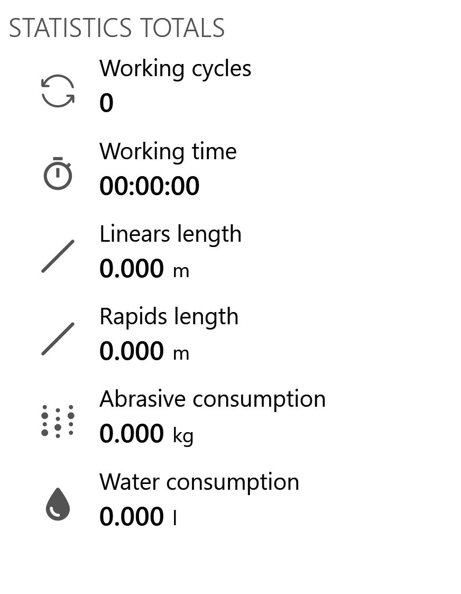
Timers
Questo riquadro è collocato nella parte inferiore destra dell’interfaccia e mette a disposizione dell’operatore il riassunto di alcune tempistiche:
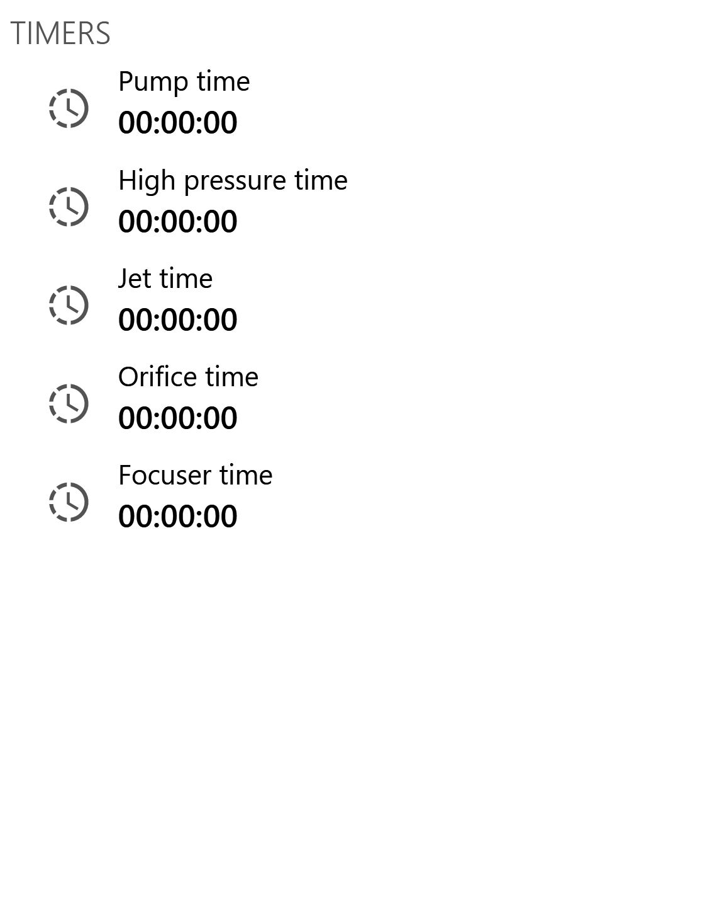
In questa pagina è possibile accedere agli allarmi e alle manutenzioni:

Servizi
 | Allarmi |
Manutenzioni |
Pagina allarmi
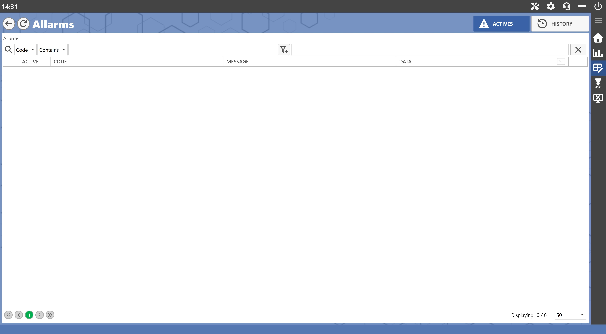
Barra superiore
 | Indietro |
 | Aggiorna |
Attivi | |
 | Storico |
Esempio di allarme attivo
La seguente immagine mostra un esempio di allarme attivo, con il colore di sfondo dell’applicativo che diventa rosso:
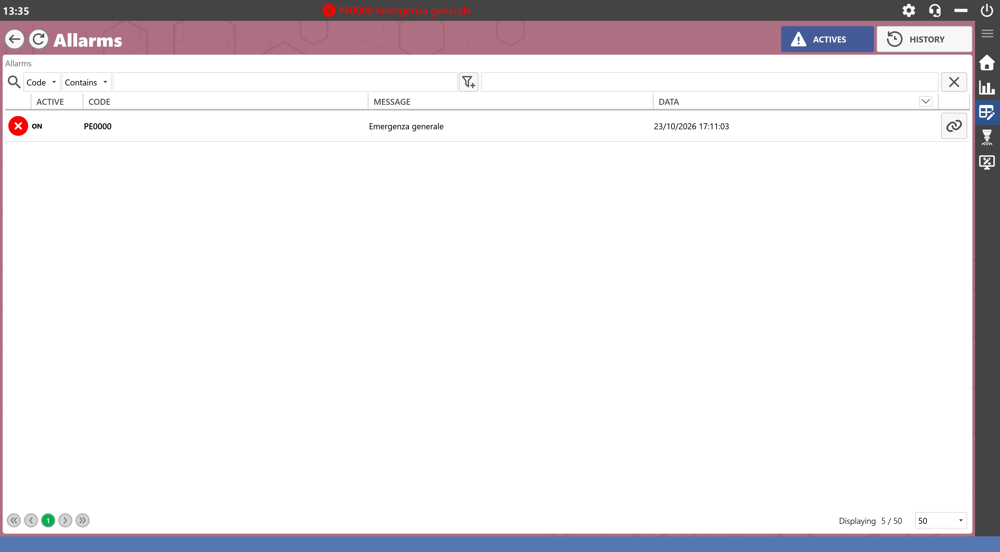
Esempio storico
La seguente immagine mostra un esempio di storico:
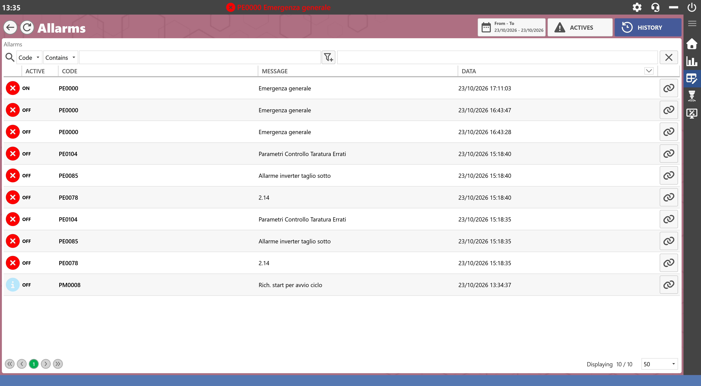
Pulsanti
Filtro date in storico
Filtro date |
L’operatore può scegliere se visualizzare i messaggi della giornata, della settimana, del mese, dell’anno o con un intervallo personalizzato.

DSC (Donatoni Share Content)
 | DSC Allarmi |
Pagina manutenzioni

Barra superiore

 | Indietro |
 | Aggiorna |
 | Manutenzioni |
 | Esecuzioni |
Manutenzioni
 | Apri DSC |
Esecuzioni
 | Filtro date |
L’operatore può scegliere se visualizzare le manutenzioni della giornata, della settimana, del mese, dell’anno o con un intervallo personalizzato.

Questa interfaccia è accessibile tramite la pressione del seguente pulsante nel menù laterale destro:
/3.4-20261023-073231.png) | Hydrofinish |
La seguente immagine mostra un esempio di interfaccia di Hydrofinish:
/0.0.png)
Comandi
Questo riquadro è collocato nella parte superiore centrale dell’interfaccia.
Permette all’operatore di eseguire le seguenti azioni:
/1.0.png)
/1.1.png) | Parcheggio automatico |
/1.2.png) | Cambia Utensile Manuale |
/1.3.png) | Volantino |
Assi
Questo riquadro è collocato nella parte superiore sinistra dell’interfaccia.
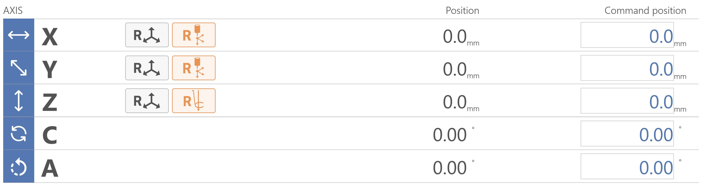
Pulsanti Assi
Limitatamente a questa modalità operativa sono disponibili i seguenti pulsanti:
/3.6.png) | Reset Asse |
/3.7.png) | Reset origini X e Y |
/3.8.png) | Reset origine Z |
Tool plus
Questo riquadro è collocato nella parte superiore destra dell’interfaccia e permette di gestire il Tool Plus:
/3.0.png)
Parametri Tool Plus
/3.3_b-20261023-053843.png) | Lunghezza |
/3.4_b-20261023-053756.png) | Diametro |
/3.5_b-20261023-053926.png) | RPM |
/3.6_b-20261023-054008.png) | Soglia allarme |
| Consumo |
Pulsanti Tool Plus
/PART_InnerGrid_System.Windows.Controls.Grid_28831760-20261023-140317.png) | Cambia modalità |
| Tasta utensile |
/3.9.png) | Sollevamento |
/3.10.png) | Abbassamento |
Accensione/Spegnimento acqua | |
/3.12.png) | Attiva/Disattiva rotazione |
Origine
Questo riquadro è collocato nella parte superiore destra dell’interfaccia, sotto la barra superiore:
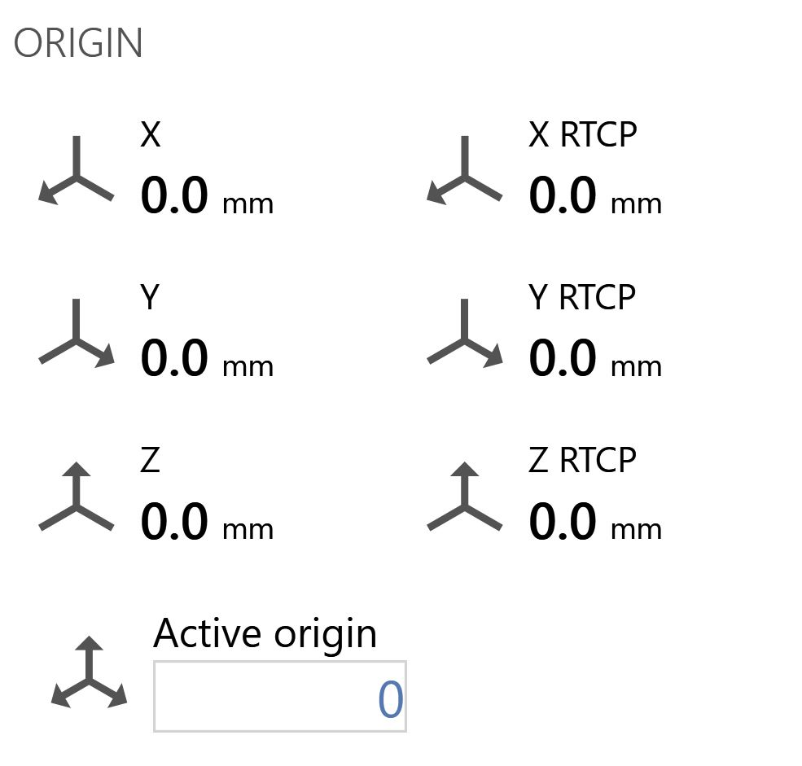
Hydrofinish
Questa sezione è collocata nella parte inferiore sinistra dell’interfaccia e permette di gestire i parametri di lavorazione Hydrofinish:
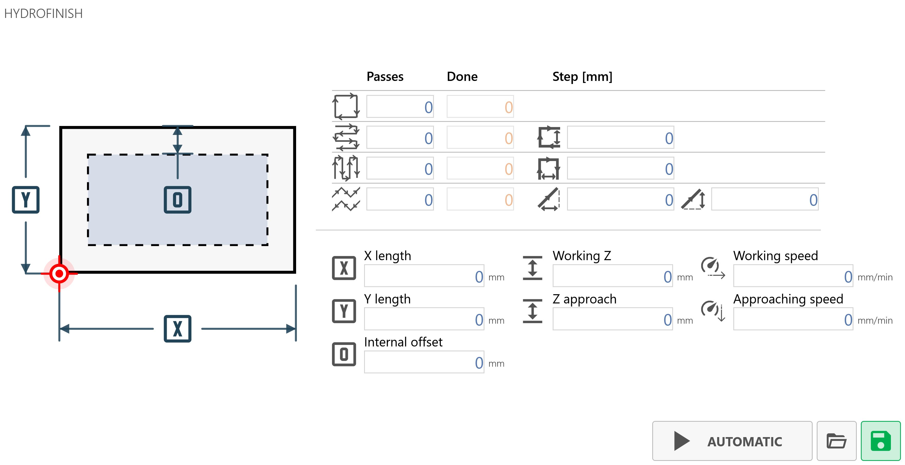
Tipologia passate Hydrofinish
/5.2.0.png)
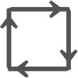 | Contorno |
Passate orizzontali | |
/5.2.3.png) | Passate verticali |
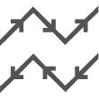 | Passate a zig zag |
Passo da sinistra a destra | |
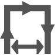 | Passo dall'alto verso il basso |
Passo Zigzag X | |
/5.2.8.png) | Passo Zigzag Y |
Parametri Hydrofinish
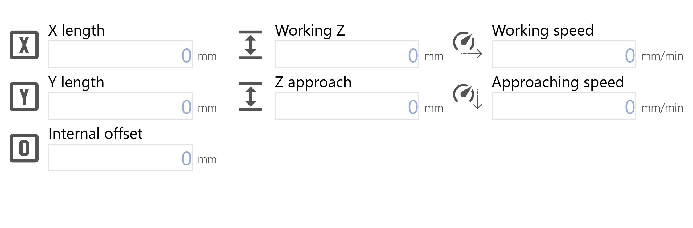
/5.3.1.1_b-20261023-055450.png) | Misura orizzontale |
/5.3.1.2_b-20261023-055538.png) | Misura verticale |
/5.3.1.3_b-20261023-055620.png) | Offset interno |
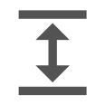 | Z lavorazione |
Z avvicinamento | |
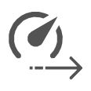 | Velocità di lavoro |
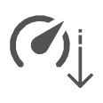 | Velocità di avvicinamento |
Barra inferiore Hydrofinish
/5.4.0_disable.png)
/5.4.1.1-20261023-140113.png) | Automatico |
Carica ricetta | |
/5.4.3.png) | Salva ricetta |
Carica ricetta
Il pannello per caricare una ricetta appare inizialmente come mostrato di seguito:
/5.5.1.png)
Dopo aver selezionato una ricetta, viene mostrata un’anteprima dei valori:
/5.5.2-20261023-134836.png)
Cancella | |
/5.5.3.2-20261023-135146.png) | Conferma |
Waterjet
Questo riquadro è collocato nella parte centrale destra dell’applicativo e offre all’operatore le seguenti possibilità:
/6.0.png)
Pulsanti Tool plus
/7.3_on.png) | Misura utensile |
/7.1_off-20261022-115614.png) | Getto attivo |
Pompa attiva | |
/7.2_off-20261022-115711.png) | Alta pressione |
/7.8_off-20261022-120040.png) | Abrasivo attivo |
Parametri Tool plus
/7.4_a-20261022-115933.png) | Bassa pressione |
/7.5_a-20261022-115934.png) | Alta pressione |
/7.6_a-20261022-115934.png) | Flusso abrasivo |
/7.9-20261023-145712.png) | Abrasivo in LP |
Feed
/7.0.png)
All’apertura dell’applicativo, verrà avviato l’applicativo EasyStone per la programmazione:

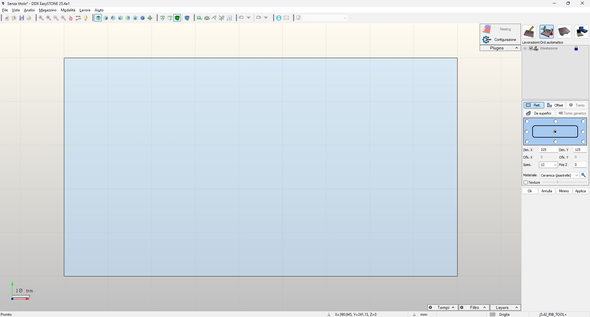